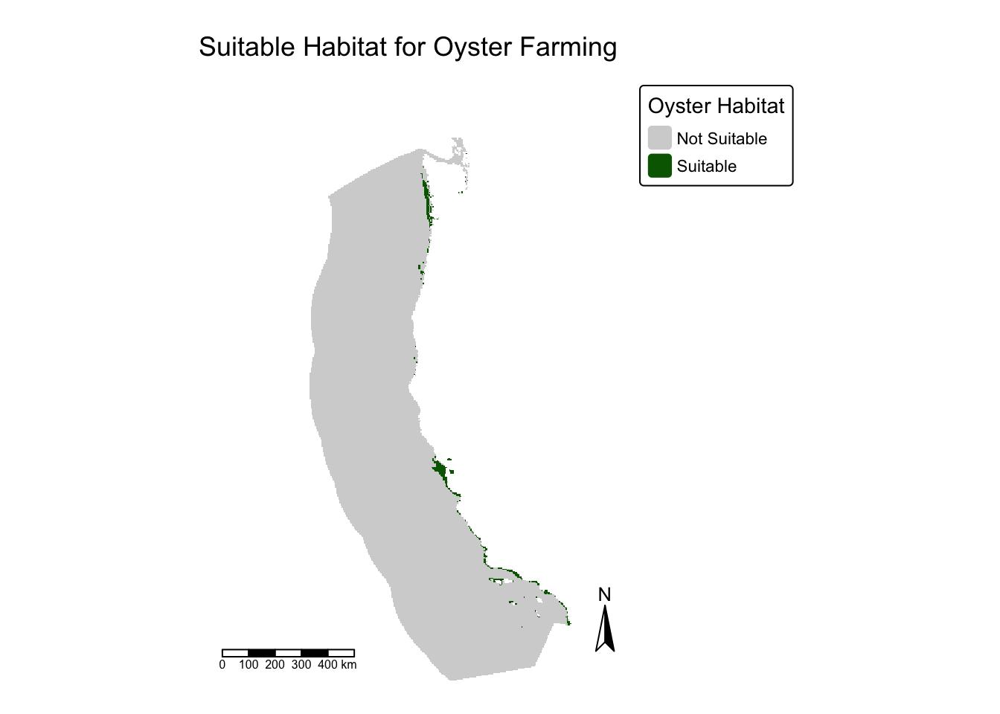
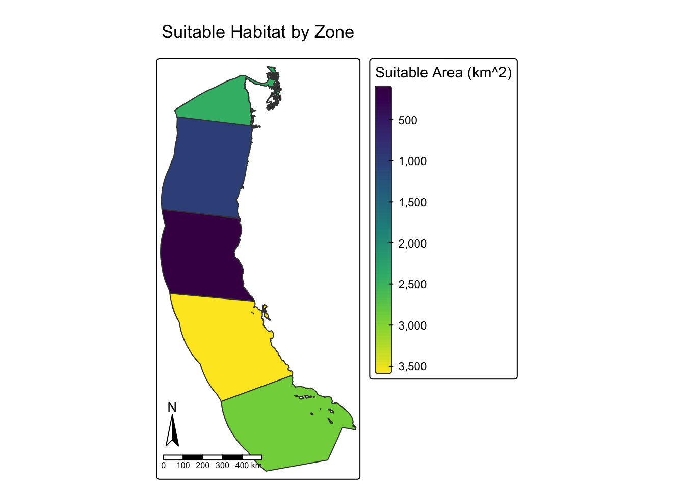
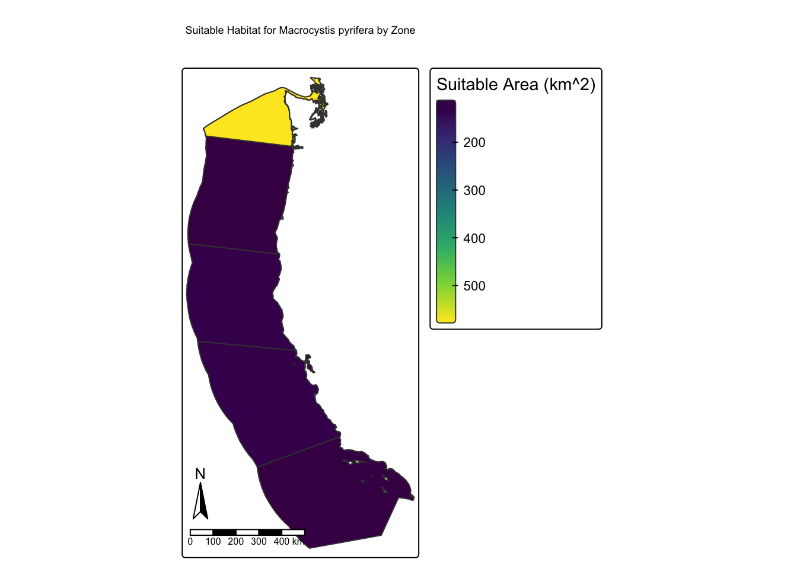

library(tidyverse)
library(sf)
library(terra)
library(tmap)
library(patchwork)Responses - 1
Purpose
The purpose of this analysis is to provide maps and statistics that summarize the total area of suitable aquaculture habitat for various species of farmed aquatic species. First, the extent of aquaculture habitat for oysters in 5 west-coast economic zones will be determined. Then, I provide a function which allows a user to input depth and temperature ranges for a target species, and yield a similar map and table which summarizes approximate viable aquaculture area for each economic zone.
Prepare environment - load libraries
Read in Data
# Create path for sst data
sst_dir <- here::here("data", "sst")
# Read in data as a stack of rasters
sst <- list.files(sst_dir, pattern = glob2rx("*.tif$"), full.names = TRUE)
sst_sort <- sst[
# Sort filepaths based on numeric suffix
order(
# Extract numeric suffix of filenames and convert to numeric
as.numeric(gsub(".*_(\\d+)\\.tif$", "\\1", sst))
)
]
sst_rast <- rast(sst_sort)
# Read in bathymetry raster
bathymetry <- rast(here::here("data", "depth.tif"))
# Read in EEZ shapefile
eez <- st_read(here::here("data", "wc_regions_clean.shp"), quiet = TRUE)Calculate mean surface temperature in degrees Celsius
# Calculate the mean sea surface temperature, adjust from K to C
mean_sst <- mean(sst_rast) - 273.15
# Reproject sst to a CRS with meters instead of degrees, specify resolution
sst_reprojected <- project(mean_sst, "EPSG:32611")
# Check values
sst_reprojectedclass : SpatRaster
size : 554, 392, 1 (nrow, ncol, nlyr)
resolution : 4203.97, 4203.97 (x, y)
extent : -953617.5, 694338.7, 3316838, 5645837 (xmin, xmax, ymin, ymax)
coord. ref. : WGS 84 / UTM zone 11N (EPSG:32611)
source(s) : memory
name : mean
min value : 8.392167
max value : 27.921661 Adjust bathymetry data and combine with reprojected SST data
bathymetry_reprojected <- project(bathymetry, sst_reprojected) %>% # Reproject
resample(sst_reprojected) %>% # Resample
crop(sst_reprojected) # Crop to sst extentCreate matrices for relcassification
We want to isolate the temperatures and ocean depths that have been identified as suitable aquaculture habitats for our targeted species. In order to do this, we must re-classify our temperature and depth data to add an indicator (1 or 0) or whether a position on the raster is viable (1) or non-viable (0) for aquaculture of the targeted species. Once we’ve created re-classified sst and depth rasters, we’ll combine them into a single suitable-habitat raster.
# Create a matrix to reclassify SST
sst_matrix <- matrix(c(
-Inf, 11, 0,
11, 30, 1,
30, Inf, 0),
ncol = 3,
byrow = TRUE
)
# Matrix for depth
depth_matrix <- matrix(c(
-Inf, -70, 0,
-70, 0, 1,
0, Inf, 0),
ncol = 3,
byrow = TRUE
)Reclassify
# Reclassify
bath_mask <- classify(bathymetry_reprojected, depth_matrix)
sst_mask <- classify(sst_reprojected, sst_matrix)
# Multiply, return raster where both bathymetry and sst masks have a value of 1
oyster_mask <- bath_mask*sst_maskPrepare EEZ data
# Reproject
eez_proj <- st_transform(eez, crs(oyster_mask))
# Convert to SpatVector
eez_vect <- vect(eez_proj)
# Clip oyster habitat to eez extent with mask
oyster_eez <- mask(oyster_mask, eez_proj)Sum overlapping EEZ and habitat pixel area, print result
# Get cellsizes in m^2
oyster_cell_sizes <- cellSize(oyster_eez, unit = "m")
# Get area from cell sizes
oyster_area <- oyster_eez*oyster_cell_sizes
# Get cellsizes of entire raster in km^2
total_area_km2 <- global(oyster_area, fun = "sum", na.rm = TRUE)[1,1] / 1e6
print(paste("Oyster suitable habitat is", round(total_area_km2), "km^2"))[1] "Oyster suitable habitat is 10102 km^2"Create map showing suitable area to check our area summary function
habitat_map <-
tm_shape(oyster_eez) +
tm_raster(
col.scale = tm_scale_categorical(
values = c("0" = "lightgray", "1" = "darkgreen"),
labels = c("Not Suitable", "Suitable")
),
col.legend = tm_legend(title = "Oyster Habitat")
) +
tm_scalebar(position = c("left", "bottom")) +
tm_compass(position = c(0.9, 0.20)) +
tm_layout(
main.title = "Suitable Habitat for Oyster Farming",
frame = FALSE
)
habitat_map
Create map and table of suitable habitat per eez zone
# Suitable habitat per zone in km^2
zone_area <- zonal(oyster_area, eez_vect, fun = "sum", na.rm = TRUE) / 1e6
# Add column to eez_proj with the suitable areas from zone_area
eez_suitable_area <- eez_proj %>%
mutate(suitable_area = zone_area$depth)
eez_zones_map <-
tm_shape(eez_suitable_area) +
tm_polygons(
fill = 'suitable_area',
fill.scale = tm_scale_continuous(values = "viridis"),
fill.legend = tm_legend(title = "Suitable Area (km^2)")
) +
tm_compass(position = c(0, 0.2)) +
tm_scalebar(position = c(0, 0.075)) +
tm_title(text = "Suitable Habitat by Zone")
eez_zones_map
# Create table
eez_zones_table <-
st_drop_geometry(eez_suitable_area) %>%
select(c('rgn', 'suitable_area'))
print(eez_zones_table) rgn suitable_area
1 Oregon 982.9159
2 Northern California 105.1783
3 Central California 3570.2620
4 Southern California 2897.2642
5 Washington 2440.2062Interpretation of Figures
The map and table above show that Central and Southern California have the most suitable area for Oyster aquaculture, whereas Northern California and Oregon have notably lower suitable area for Oyster aquaculture. This figure would suggest that aquaculture efforts for oysters would be best suited for the southern portion of the American West Coast.
Function for Chosen Species
We want a function that takes temperature range and depth range for a target species, and produces similar figures to those generated above for Oysters.
# Create function with inputs sst min/max, depth min/max and species name
aquaculture_range <- function(sst_min, sst_max, depth_min, depth_max, species_name = "Species") {
# Calculate the mean sea surface temperature
mean_sst <- mean(sst_rast)
#Adjust from Kelvin to Celsius
adjusted_mean_sst <- mean_sst - 273.15
# Reproject sst to a CRS with meters instead of degrees
sst_reprojected <- project(adjusted_mean_sst, "EPSG:32611")
# Create a matrix to reclassify SST
sst_matrix <- matrix(c(
-Inf, sst_min, 0,
sst_min, sst_max, 1,
sst_max, Inf, 0),
ncol = 3,
byrow = TRUE
)
# Matrix for depth
depth_matrix <- matrix(c(
-Inf, depth_min, 0,
depth_min, depth_max, 1,
depth_max, Inf, 0),
ncol = 3,
byrow = TRUE
)
bathymetry_reprojected <- project(bathymetry, sst_reprojected) %>% # Reproject
resample(sst_reprojected) %>% # Resample
crop(sst_reprojected) # Crop to sst extent
# Reclassify
bath_mask <- classify(bathymetry_reprojected, depth_matrix)
sst_mask <- classify(sst_reprojected, sst_matrix)
# Multiply, return raster where both bath and sst have a value of 1
species_mask <- bath_mask*sst_mask
# Reproject
eez_proj <- st_transform(eez, crs(species_mask))
# Clip species habitat to eez extent with mask
species_eez <- mask(species_mask, vect(eez_proj))
# Get cellsizes in m^2
species_cell_sizes <- cellSize(species_eez, unit = "m")
# Get area from cell sizes
species_area <- species_eez*species_cell_sizes
# Suitable habitat per zone in km^2
zone_area <- zonal(species_area, eez_vect, fun = "sum", na.rm = TRUE) / 1e6
# Add column to eez_proj with the suitable areas from zone_area
eez_suitable_area <- eez_proj %>%
mutate(suitable_area = zone_area$depth)
eez_zones_map <-
tm_shape(eez_suitable_area) +
tm_polygons(
fill = 'suitable_area',
fill.scale = tm_scale_continuous(values = "viridis"),
fill.legend = tm_legend(title = "Suitable Area (km^2)")
) +
tm_compass(position = c(0, 0.2)) +
tm_scalebar(position = c(0, 0.075)) +
tm_title(text = paste("Suitable Habitat for", species_name, "by Zone"))
eez_zones_table <-
st_drop_geometry(eez_suitable_area) %>%
select(c('rgn', 'suitable_area'))
return(list(map = eez_zones_map, table = eez_zones_table))
}
# Check Function
aquaculture_range(8, 23, -30, -25, species_name = "Macrocystis pyrifera")$map
$table
rgn suitable_area
1 Oregon 105.2640
2 Northern California 122.6864
3 Central California 123.1503
4 Southern California 106.0366
5 Washington 579.4888Interpretation of Figure for Macrocystis pyrifera
The figure and table generated show that there is significantly less suitable aquiculture habitat for Giant Kelp (Macrocystis pyrifera) than there is for Oysters on the West Coast of the US. Furthermore, water off the coast of Washington state contains roughly 5x more suitable habitat than any other zone. This is likely because on average water temperatures are lowest in the northern part of the state, and Giant kelp prefers lower average SSTs than our previously analyzed species.
References
Hall, S. J., Delaporte, A., Phillips, M. J., Beveridge, M., & O’Keefe, M. (2011). Blue Frontiers: Managing the Environmental Costs of Aquaculture. The WorldFish Center, Penang, Malaysia.
Gentry, R. R., Froehlich, H. E., Grimm, D., Kareiva, P., Parke, M., Rust, M., Gaines, S. D., & Halpern, B. S. (2017). Mapping the global potential for marine aquaculture. Nature Ecology & Evolution, 1, 1317–1324.
GEBCO Compilation Group (2022). GEBCO_2022 Grid (doi:10.5285/e0f0bb80-ab44-2739-e053-6c86abc0289c).
California Department of Fish and Wildlife. “Giant Kelp and Bull Kelp — the species.” Marine Species Portal, https://marinespecies.wildlife.ca.gov/kelp/the-species/. Accessed 30 Nov 2025.